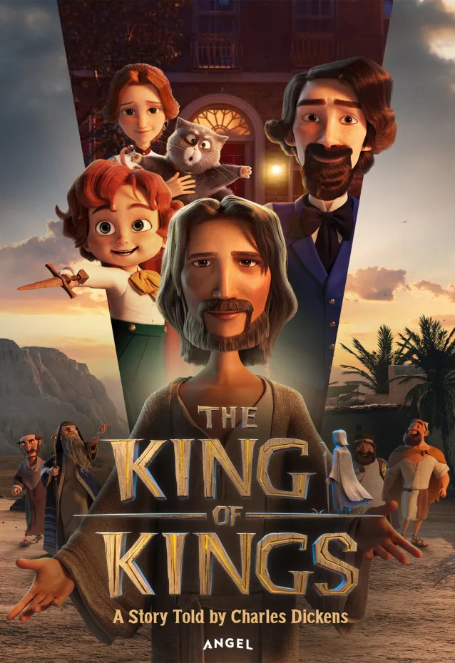

I love Pulp Fiction because it features many great actors at the height of their careers. The film features great action, cinematography, character development, and scenery. My favorite scene is when Samuel L. Jackson's character has an epiphany near the end.
 Jesus Saves
Jesus Saves